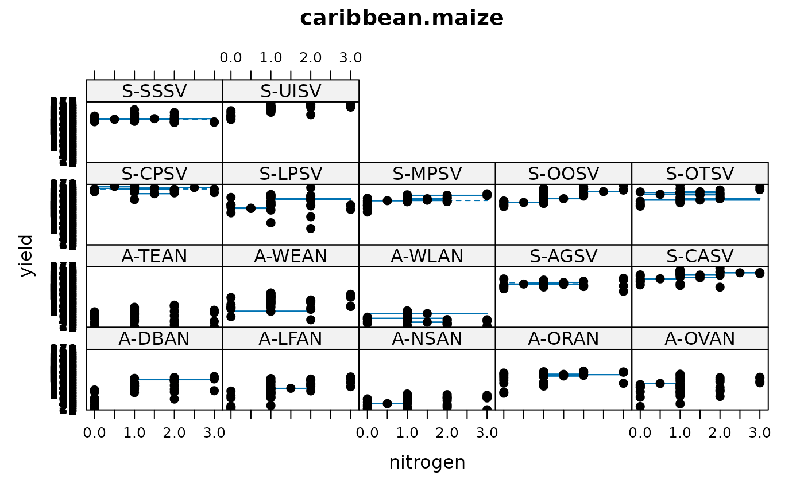

Multi-environment trial of maize with fertilization
caribbean.maize.RdMaize fertilization trial on Antigua and St. Vincent.
Format
A data frame with 612 observations on the following 7 variables.
isleisland, 2 levels
sitesite
blockblock
plotplot, numeric
trttreatment factor combining N,P,K
earsnumber of ears harvested
yieldyield in kilograms
Nnitrogen fertilizer level
Pphosphorous fertilizer level
Kpotassium fertilizer level
Details
Antigua is a coral island in the Caribbean with sufficient level land for experiments and a semi-arid climate, while St. Vincent is volcanic and level areas are uncommon, but the rainfall can be seasonally heavy.
There are 8-9 sites on each island.
Plots were 16 feet by 18 feet. A central area 12 feet by 12 feet was harvested and recorded.
The number of ears harvested was only recorded on the isle of Antigua.
The actual amounts of N, P, and K are not given. Only 0, 1, 2, 3.
The digits of the treatment represent the levels of nitrogen, phosphorus, and potassium fertilizer, respectively.
The TEAN site suffered damage from goats on plot 27, 35 and 36.
The LFAN site suffered damage from cattle on one boundary–plots 9, 18, 27, 36.
Electronic version of the data was retrieved from http://lib.stat.cmu.edu/datasets/Andrews/ https://www2.stat.duke.edu/courses/Spring01/sta114/data/andrews.html
Source
D.F. Andrews and A.M. Herzberg. 1985. Data: A Collection of Problems from Many Fields for the Student and Research Worker. Springer. Table 58.1 and 58.2.
Examples
library(agridat)
data(caribbean.maize)
dat <- caribbean.maize
# Yield and ears are correlated
libs(lattice)
xyplot(yield~ears|site, dat, ylim=c(0,10), subset=isle=="Antigua",
main="caribbean.maize - Antiqua")
# Some locs show large response to nitrogen (as expected), e.g. UISV, OOSV
dotplot(trt~yield|site, data=dat, main="caribbean.maize treatment response")
# Show the strong N*site interaction with little benefit on Antiqua, but
# a strong response on St.Vincent.
dat <- transform(dat, env=paste(substring(isle,1,1),site,sep="-"))
bwplot(yield~N|env, dat,
main="caribbean.maize", xlab="nitrogen")
